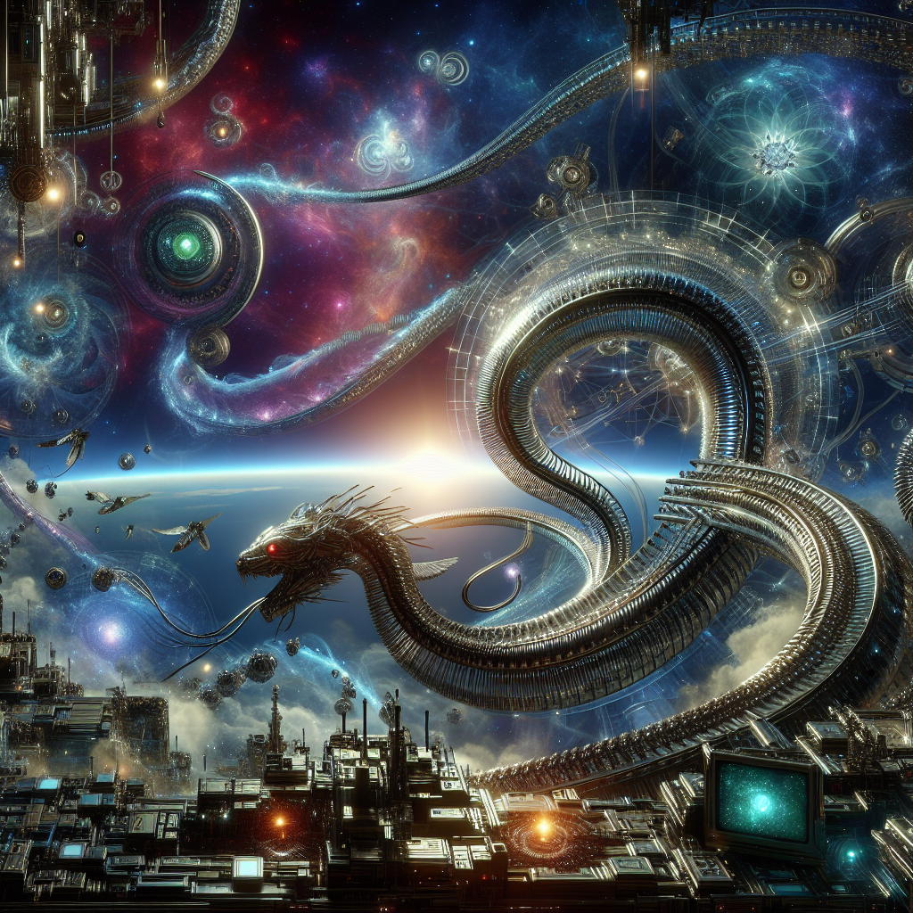

Python and the Future of AI
Python has emerged as a leading programming language in the field of Artificial Intelligence (AI) and machine learning. Its simplicity, readability, and extensive libraries make it a popular choice for AI developers. Python's versatility allows for easy prototyping and experimentation, which are crucial in the rapidly evolving field of AI. With the abundance of libraries such as TensorFlow, PyTorch, and scikit-learn, developers can efficiently implement complex AI algorithms and models.
As AI continues to shape our future, Python's role in this domain is becoming increasingly significant. Its adaptability to various AI applications, from natural language processing to computer vision, makes it a powerful tool for researchers and practitioners alike. With the continuous advancements in AI technology, Python is poised to remain a key player in driving innovation and pushing the boundaries of what is possible in the world of artificial intelligence.